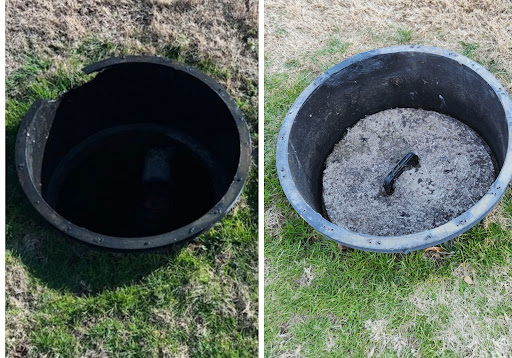

Pre-listing
Before you put the house on the market
A septic problem found by the buyer’s inspector costs more than the same problem found by you, because by then you’re negotiating.
The repair costs the same either way. What changes is who is holding the timeline, and whether the number gets taken off your sale price with a margin on top.
Why the order matters
Found by you it’s a repair. Found by them it’s a concession.
A buyer’s inspector flags the septic system late in the process, when the buyer already has a mortgage in motion and you already have a closing date. At that point the conversation is not about what the work costs. It is about what the buyer is willing to proceed without.
Handled before listing, the same work is just work. You get it quoted, you get it done, and you have something to hand over.
It also removes the single most common reason a closing on a septic property slips: nobody can find the tank, and nobody can say when the filter was last cleaned.
What it usually involves
Locating the tank and fitting risers if there aren’t any. Cleaning the effluent filter. Checking the pump, floats and panel. Opening the distribution box to confirm the lines are taking water. Repairing anything that turns up, before an inspector writes it down.
What a buyer's inspector looks for
The things that turn up late.




If you’re on the other side of it
Buying a house on septic.
Worth having the system looked at properly rather than relying on a general home inspection, which usually stops at “appears functional”. The things that cost money later — a crumbling distribution box, roots in a field line, a filter that has never been cleaned — don’t show up from the surface.
One customer described exactly this: “As new homeowners, that kind of honesty and reassurance means so much.”
If you’re buying and the tank has never been located, that is the first thing to sort out, and it is covered on finding a buried tank.

Listing soon? Get it looked at first.
Call and say when the house is going on the market, and we’ll work back from there.
Open seven days · Clayton · Johnston County